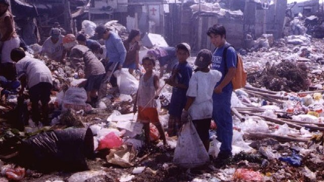

A Beacon of Hope: Efren Peñaflorida's Heroic Endeavors Amidst Typhoon Devastation
Written by Erian Jeshua Margallo
Revised by Sharmaine Trellier
Revised by Sharmaine Trellier

In 2009, Efren Peñaflorida emerged globally, earning the esteemed CNN Hero of the Year title. This recognition, while significant, was only the beginning of Peñaflorida's journey of heroism and service. When Typhoon Yolanda (also known as Typhoon Haiyan) devastated parts of the Philippines in November 2013, Peñaflorida's heroism took on a new and urgent form.
Peñaflorida was not alone in his mission, however. In the face of overwhelming destruction and despair, he joined forces with fellow CNN Heroes Doc Hendley and Robin Lim. Together, they formed a powerful alliance, their collective efforts shining as a beacon of hope amidst the wreckage. Their initial focus was Tacloban, one of the areas hardest hit by the typhoon. The city, once bustling with life, now lay in ruins, the aftermath of the typhoon's wrath visible in every direction. The trio wasted no time, quickly organizing a response team to aid the devastated community. Doc Hendley, a clean-water activist hailing from North Carolina, played a pivotal role in their efforts. Using his expertise, Hendley worked alongside Peñaflorida to provide the affected communities with clean and safe drinking water. They organized the distribution of water filters, an essential resource in the wake of the typhoon, which significantly improved the overall health conditions in the area.
At the heart of their operation was Peñaflorida's groundbreaking initiative, the "Kariton Klasrum." Originally designed as a mobile classroom to educate impoverished children, the pushcart classroom took on a new role amidst the crisis. It became a central hub for their relief efforts, where they collected donations and distributed an impressive 120,000 meals donated by Stop Hunger Now. Peñaflorida and Hendley went beyond mere logistics, personally assisting volunteers in assembling and packing meals for distribution, adding a personal touch to their humanitarian mission. After the initial shock of the typhoon had passed, Peñaflorida found another ally in CNN Hero Evans Wadongo. Recognizing the health risks and difficulties posed by the lack of electricity in Tacloban, they initiated a campaign to provide solar lanterns to the devastated areas. The impact was twofold: the lanterns provided a much-needed light source in the darkness and enabled 5,000 children to continue their education, reducing the community's reliance on kerosene lamps. Peñaflorida's Dynamic Teen Company (DTC) organization, known for propelling the "Kariton Klasrum" project, further extended its support. In an act of profound generosity, they offered scholarships to 45 DTC college scholars who were victims of Super Typhoon Yolanda, demonstrating their commitment to education and support for their community even in the hardest of times.
Efren Peñaflorida's story is a testament to the power of resilience, compassion, and collective action. His heroic endeavors in the wake of Typhoon Yolanda are a powerful reminder of how individuals and communities can rise amidst adversity and how a single dream can ignite a beacon of hope in the darkest times. His journey inspires others, lighting the path for future heroes to follow.
Efren Peñaflorida's story is a testament to the power of resilience, compassion, and collective action. His heroic endeavors in the wake of Typhoon Yolanda are a powerful reminder of how individuals and communities can rise amidst adversity and how a single dream can ignite a beacon of hope in the darkest times. His journey inspires others, lighting the path for future heroes to follow.